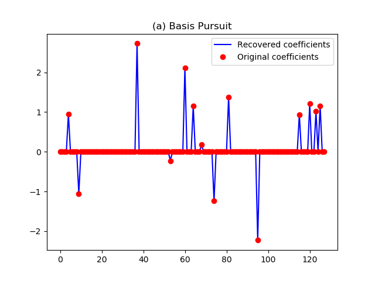
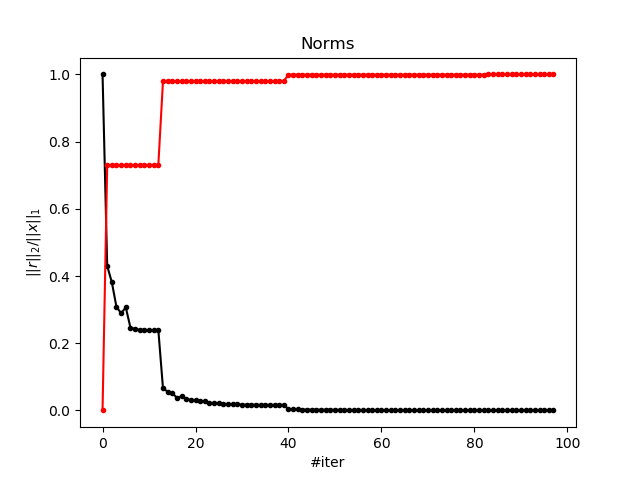

Note
Click here to download the full example code
SPGL1 Tutorial¶
In this tutorial we will explore the different solvers in the spgl1
package and apply them to different toy examples.
import numpy as np
import matplotlib.pyplot as plt
from scipy.sparse.linalg import LinearOperator
from scipy.sparse import spdiags
import spgl1
# Initialize random number generators
np.random.seed(43273289)
Create random m-by-n encoding matrix and sparse vector
m = 50
n = 128
k = 14
[A,Rtmp] = np.linalg.qr(np.random.randn(n,m),'reduced')
A = A.T
p = np.random.permutation(n)
p = p[0:k]
x0 = np.zeros(n)
x0[p] = np.random.randn(k)
Solve the underdetermined LASSO problem for \(||x||_1 <= \pi\):
\[min.||Ax-b||_2 \quad subject \quad to \quad ||x||_1 <= \pi\]
b = A.dot(x0)
tau = np.pi
x,resid,grad,info = spgl1.spg_lasso(A, b, tau, verbosity=1)
print('%s%s%s' % ('-'*35,' Solution ','-'*35))
print('nonzeros(x) = %i, ||x||_1 = %12.6e, ||x||_1 - pi = %13.6e' %
(np.sum(abs(x)>1e-5), np.linalg.norm(x,1), np.linalg.norm(x,1)-np.pi))
print('%s' % ('-'*80))
Out:
================================================================================
SPGL1
================================================================================
No. rows : 50
No. columns : 128
Initial tau : 3.14e+00
Two-norm of b : 3.40e+00
Optimality tol : 1.00e-04
Target one-norm of x : 3.14e+00
Basis pursuit tol : 1.00e-06
Maximum iterations : 500
EXIT -- Optimal solution found
Products with A : 1 Total time (secs) : 0.0
Products with A^H : 8 Project time (secs) : 0.0
Newton iterations : 0 Mat-vec time (secs) : 0.0
Line search its : 0 Subspace iterations : 0
----------------------------------- Solution -----------------------------------
nonzeros(x) = 7, ||x||_1 = 3.141593e+00, ||x||_1 - pi = 8.881784e-16
--------------------------------------------------------------------------------
Solve the basis pursuit (BP) problem: .. math:
min. ||x||_1 \quad subject \quad to \quad Ax = b
b = A.dot(x0)
x,resid,grad,info = spgl1.spg_bp(A, b, verbosity=2)
plt.figure()
plt.plot(x,'b')
plt.plot(x0,'ro')
plt.legend(('Recovered coefficients','Original coefficients'))
plt.title('(a) Basis Pursuit')
plt.figure()
plt.plot(info['xNorm1'], info['rNorm2'], '.-k')
plt.xlabel(r'$||x||_1$')
plt.ylabel(r'$||r||_2$')
plt.title('Pareto curve')
plt.figure()
plt.plot(np.arange(info['iterr']), info['rNorm2']/max(info['rNorm2']),
'.-k', label=r'$||r||_2$')
plt.plot(np.arange(info['iterr']), info['xNorm1']/max(info['xNorm1']),
'.-r', label=r'$||x||_1$')
plt.xlabel(r'#iter')
plt.ylabel(r'$||r||_2/||x||_1$')
plt.title('Norms')
- 

- 
Out:
================================================================================
SPGL1
================================================================================
No. rows : 50
No. columns : 128
Initial tau : 0.00e+00
Two-norm of b : 3.40e+00
Optimality tol : 1.00e-04
Target objective : 0.00e+00
Basis pursuit tol : 1.00e-06
Maximum iterations : 500
iterr Objective Relative Gap Rel Error gNorm stepG nnzX nnzG tau
0 3.3978494e+00 0.0000000e+00 1.00e+00 8.995e-01 0.0 0 0 1.2834830e+01
1 1.4610032e+00 1.6532743e+00 1.00e+00 3.459e-01 -0.6 67 1
2 1.2957367e+00 1.4480527e+00 1.00e+00 3.057e-01 0.0 53 1
3 1.0445582e+00 1.0186987e+00 1.00e+00 2.394e-01 0.0 33 1
4 9.8320803e-01 1.9671347e+00 9.83e-01 3.006e-01 0.0 17 1
5 1.0408537e+00 2.7237524e+00 1.00e+00 3.273e-01 0.0 15 1
6 8.3766484e-01 4.4627639e-01 8.38e-01 1.829e-01 0.0 20 1
7 8.2370803e-01 2.1784189e-01 8.24e-01 1.661e-01 0.0 16 1
8 8.1471442e-01 1.0576174e-01 8.15e-01 1.582e-01 0.0 15 1
9 8.1352564e-01 1.2833205e-01 8.14e-01 1.618e-01 0.0 12 2
10 8.1346284e-01 1.2136051e-01 8.13e-01 1.595e-01 0.0 12 3
12 8.1283336e-01 1.6431186e-03 8.13e-01 1.509e-01 0.0 12 12 1.7214207e+01
20 1.0262800e-01 3.7124664e-02 1.03e-01 1.684e-02 0.0 55 5
30 5.8775070e-02 2.1151854e-02 5.88e-02 9.905e-03 0.0 26 5
39 5.6081993e-02 3.4487799e-03 5.61e-02 9.059e-03 0.0 16 16 1.7561410e+01
40 1.3497461e-02 2.3368157e-02 1.35e-02 2.563e-03 0.0 61 17
50 6.5248570e-03 2.5729401e-02 6.52e-03 2.012e-03 -0.6 44 8
60 3.6779037e-03 8.0294188e-03 3.68e-03 8.458e-04 -0.9 30 30
70 1.7198692e-03 6.8520394e-04 1.72e-03 2.801e-04 0.0 17 17
80 1.3668596e-03 8.5588972e-05 1.37e-03 2.204e-04 0.0 14 14
82 1.3666459e-03 1.8193226e-05 1.37e-03 2.163e-04 0.0 14 14 1.7570044e+01
90 1.3860943e-04 4.2028246e-05 1.39e-04 2.222e-05 0.0 14 14
98 8.6425580e-05 5.4782374e-05 8.64e-05 1.545e-05 0.0 14 14
EXIT -- Found a root
Products with A : 33 Total time (secs) : 0.1
Products with A^H : 99 Project time (secs) : 0.0
Newton iterations : 4 Mat-vec time (secs) : 0.0
Line search its : 32 Subspace iterations : 0
Solve the basis pursuit denoise (BPDN) problem: .. math:
min. ||x||_1 \quad subject \quad to \quad ||Ax - b||_2 <= 0.1
b = A.dot(x0) + np.random.randn(m) * 0.075
sigma = 0.10 # % Desired ||Ax - b||_2
x, resid, grad, info = spgl1.spg_bpdn(A, b, sigma, iterations=10, verbosity=2)
plt.figure()
plt.plot(x,'b')
plt.plot(x0,'ro')
plt.legend(('Recovered coefficients','Original coefficients'))
plt.title('(b) Basis Pursuit Denoise')

Out:
================================================================================
SPGL1
================================================================================
No. rows : 50
No. columns : 128
Initial tau : 0.00e+00
Two-norm of b : 3.49e+00
Optimality tol : 1.00e-04
Target objective : 1.00e-01
Basis pursuit tol : 1.00e-06
Maximum iterations : 10
iterr Objective Relative Gap Rel Error gNorm stepG nnzX nnzG tau
0 3.4876525e+00 0.0000000e+00 9.71e-01 8.998e-01 0.0 0 0 1.3130733e+01
1 1.5278506e+00 1.5445083e+00 9.35e-01 3.512e-01 -0.6 70 1
2 1.3785367e+00 1.3210423e+00 9.27e-01 3.004e-01 0.0 48 1
3 1.1435885e+00 1.0754951e+00 9.13e-01 2.436e-01 0.0 36 1
4 1.0650070e+00 1.8808347e+00 9.06e-01 3.058e-01 0.0 24 1
5 1.1055544e+00 1.9676460e+00 9.10e-01 2.609e-01 0.0 14 1
6 9.7104698e-01 5.0757852e-01 8.71e-01 1.910e-01 0.0 21 1
7 9.5573059e-01 2.5393233e-01 8.56e-01 1.677e-01 0.0 20 1
8 9.5003110e-01 1.6053048e-01 8.50e-01 1.613e-01 0.0 19 1
9 9.4642238e-01 6.3958437e-02 8.46e-01 1.545e-01 0.0 16 1
ERROR EXIT -- Too many iterations
Products with A : 3 Total time (secs) : 0.0
Products with A^H : 10 Project time (secs) : 0.0
Newton iterations : 1 Mat-vec time (secs) : 0.0
Line search its : 2 Subspace iterations : 0
Solve the basis pursuit (BP) problem in complex variables: .. math:
min. ||z||_1 \quad subject \quad to \quad Az = b$$
class partialFourier(LinearOperator):
def __init__(self, idx, n):
self.idx = idx
self.n = n
self.shape = (len(idx), n)
self.dtype = np.complex128
def _matvec(self, x):
# % y = P(idx) * FFT(x)
z = np.fft.fft(x) / np.sqrt(n)
return z[idx]
def _rmatvec(self, x):
z = np.zeros(n,dtype=complex)
z[idx] = x
return np.fft.ifft(z) * np.sqrt(n)
# % Create partial Fourier operator with rows idx
idx = np.random.permutation(n)
idx = idx[0:m]
opA = partialFourier(idx, n)
# % Create sparse coefficients and b = 'A' * z0;
z0 = np.zeros(n,dtype=complex)
z0[p] = np.random.randn(k) + 1j * np.random.randn(k)
b = opA.matvec(z0)
z, resid, grad, info = spgl1.spg_bp(opA, b, verbosity=2)
plt.figure()
plt.plot(z.real,'b+',markersize=15.0)
plt.plot(z0.real,'bo')
plt.plot(z.imag,'r+',markersize=15.0)
plt.plot(z0.imag,'ro')
plt.legend(('Recovered (real)', 'Original (real)',
'Recovered (imag)', 'Original (imag)'))
plt.title('(c) Complex Basis Pursuit')

Out:
================================================================================
SPGL1
================================================================================
No. rows : 50
No. columns : 128
Initial tau : 0.00e+00
Two-norm of b : 3.23e+00
Optimality tol : 1.00e-04
Target objective : 0.00e+00
Basis pursuit tol : 1.00e-06
Maximum iterations : 500
iterr Objective Relative Gap Rel Error gNorm stepG nnzX nnzG tau
0 3.2278608e+00 0.0000000e+00 1.00e+00 9.900e-01 0.0 0 0 1.0524266e+01
1 1.7448418e+00 1.9165918e+00 1.00e+00 5.168e-01 -0.6 95 0
2 1.4600574e+00 1.5883031e+00 1.00e+00 3.875e-01 0.0 57 0
3 1.1700012e+00 7.2057823e-01 1.00e+00 2.294e-01 0.0 21 0
4 1.1387081e+00 6.0492162e-01 1.00e+00 2.591e-01 0.0 14 0
5 1.1192644e+00 6.3143375e-01 1.00e+00 2.339e-01 0.0 13 0
6 1.1110267e+00 2.5990247e-02 1.00e+00 1.887e-01 0.0 14 1
7 1.1109277e+00 1.8665102e-02 1.00e+00 1.882e-01 0.0 14 1
8 1.1109130e+00 9.8075648e-03 1.00e+00 1.876e-01 0.0 14 1 1.7103189e+01
9 4.0897300e-01 2.0290430e+00 4.09e-01 1.096e-01 0.0 33 0
10 2.4260476e-01 3.0388666e-01 2.43e-01 5.139e-02 0.0 84 0
20 7.3650716e-02 1.5598522e-01 7.37e-02 1.898e-02 -0.6 36 0
30 3.9788017e-02 1.6542005e-03 3.98e-02 6.363e-03 0.0 15 6
32 3.9782650e-02 1.1422408e-03 3.98e-02 6.356e-03 0.0 14 6 1.7352196e+01
40 5.2988817e-03 2.3780252e-03 5.30e-03 8.349e-04 0.0 45 37
50 1.0390584e-03 8.2222317e-04 1.04e-03 1.846e-04 0.0 14 14
60 4.3109474e-04 2.4525356e-04 4.31e-04 8.092e-05 0.0 14 14
65 4.2277718e-04 2.9841817e-06 4.23e-04 6.689e-05 0.0 14 14 1.7354868e+01
68 6.8723628e-05 5.4983718e-05 6.87e-05 1.067e-05 0.0 14 14
EXIT -- Found a root
Products with A : 17 Total time (secs) : 0.0
Products with A^H : 69 Project time (secs) : 0.0
Newton iterations : 4 Mat-vec time (secs) : 0.0
Line search its : 16 Subspace iterations : 0
Total running time of the script: ( 0 minutes 0.868 seconds)